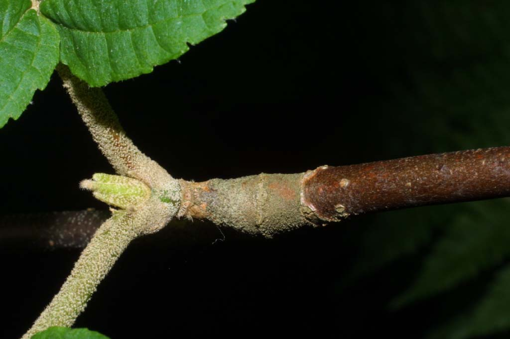
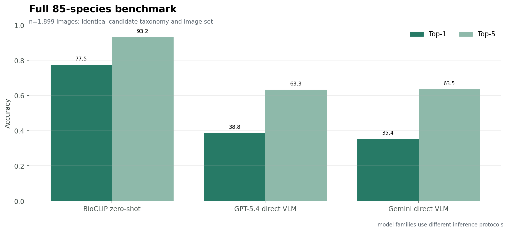
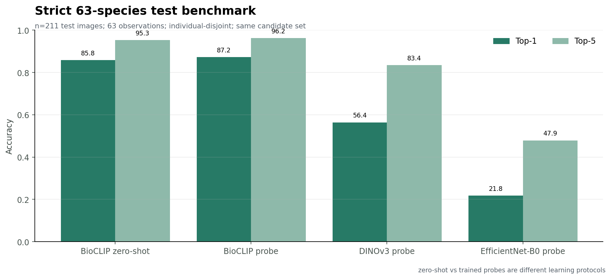
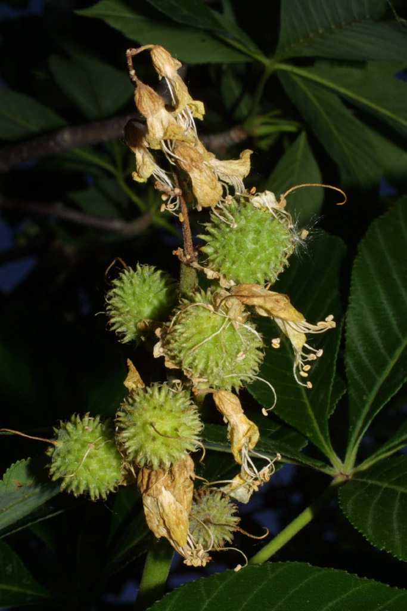
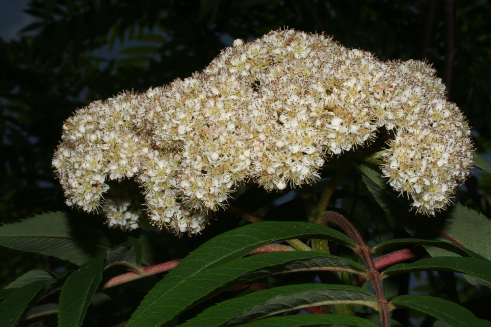
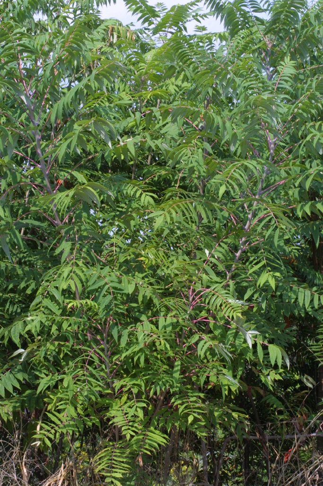
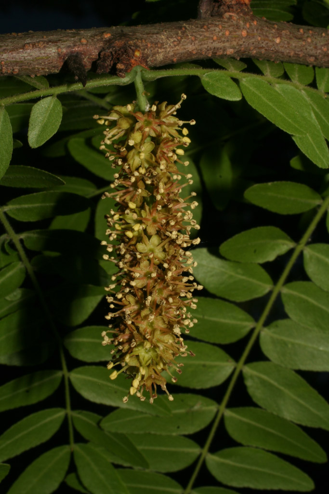

Viburnum lantanoides
- Per-image
- Ulmus rubra ✗
- Fixed
- Viburnum lantanoides ✓
All completed model runs, including smoke tests, partial failures, and protocol caveats. No result is silently substituted for another.
outputs/dinov3_strict_embeddings/split_manifest.csv · scripts/modal_dinov3_strict.py
BioCLIP zero-shot, BioCLIP probe, DINOv3 probe, and EfficientNet probe use the same 211 images and 63 labels. Training mode still differs.
BioCLIP zero-shot, GPT, and Gemini see the same 1,899 images and species taxonomy; their inference mechanism and score semantics differ.
Images align exactly, but BioCLIP/DINO use 63 candidates while GPT/Gemini predictions came from the 85-candidate full run.


These are end-to-end values preserved by each run, not standardized hardware benchmarks. GPU time, wall time, and API latency are kept distinct.
| Run | Scope | Recorded model work | Total run | API cost | Source |
|---|---|---|---|---|---|
| BioCLIP zero-shot full | 1,899 images | 21.9 s GPU / 55.8 s wall inference | 98.8 s | local/cloud GPU run; API cost n/a | outputs/bioclip25_baseline/summary.json |
| BioCLIP zero-shot strict | 211 test images | 2.4 s GPU / 6.1 s wall inference | 39.1 s | API cost n/a | outputs/bioclip25_strict_zero_shot/summary.json |
| BioCLIP frozen embeddings + probe | 1,641 embeddings + probe | 20.0 s GPU / 53.3 s wall embedding; 2.1 s probe | 88.7 s | API cost n/a | outputs/bioclip25_strict_embeddings/summary.json |
| DINOv3 frozen embeddings + probe | 1,641 embeddings + probe | 2.5 s GPU / 27.7 s wall embedding; 2.1 s probe | 44.4 s | API cost n/a | outputs/dinov3_strict_embeddings/summary.json |
| EfficientNet-B0 embeddings + probe | 1,641 embeddings + probe | 0.6 s GPU / 23.4 s wall embedding; 2.7 s probe | 38.2 s | API cost n/a | outputs/efficientnet_b0_strict_embeddings/summary.json |
| GPT-5.4 direct VLM full | 1,899 requests | 6.76 s mean latency; 1,292.5 s model wall | within combined 1,571.4 s run | $8.0747 | outputs/openrouter_vlm_full/summary.json |
| Gemini 2.5 Flash Lite full | 1,899 requests | 1.40 s mean latency; 271.4 s model wall | within combined 1,571.4 s run | $0.6042 | outputs/openrouter_vlm_full/summary.json |
Official OpenCLIP transforms; ViT-H/14 image embedding; class text is the scientific name plus vernacular alias when present; text vectors are normalized, averaged, then renormalized; image/text cosine logits use the learned logit scale and a closed-set softmax. Backbone frozen. Ground truth read only after Top-5 lists exist.
scripts/modal_bioclip_strict.py · outputs/bioclip25_baseline/summary.json
BioCLIP: normalized 1,024-D image embedding. DINOv3: Hugging Face processor and normalized 768-D pooler_output. EfficientNet-B0: ImageNet-1K V1 transforms and normalized 1,280-D global-average-pooled penultimate feature. Each uses multinomial logistic regression (lbfgs, max_iter 3,000); C ∈ {0.01, 0.1, 1, 10, 100} selected on validation macro accuracy, then refit on train+validation. C=100 for all three.
Each input is EXIF-transposed, RGB converted, resized so longest side ≤1,536 px, and re-encoded JPEG quality 90 without metadata. The image and 85-name candidate prompt are sent once. Temperature 0; strict JSON schema requires five distinct in-list species and five self-assessed scores. GPT full run: minimal reasoning, auto detail, flex tier, 700 completion tokens. Gemini: 300 completion tokens. Parsing rejects missing/duplicate/out-of-list Top-5 outputs.
scripts/modal_openrouter_vlm.py · reports/openrouter_vlm_audit.md
Direct-VLM accuracy combines image evidence with candidate formulation, list order, forced choice, decoding, provider behavior, and parser success. The output score is self-reported and is not calibrated probability.
Perform closed-set botanical species identification from the image. Use visible morphology only. Select exactly five distinct candidates from the list, rank them most likely first, and return each scientific name exactly as written in ranked_species. Put the five corresponding self-assessed scores between 0 and 1 in confidences; they need not sum to 1. Do not use filenames, metadata, web search, or any information outside the image and candidate list. Candidates: - [85 scientific names, with vernacular alias in parentheses]
The 85 candidate lines follow this text. Full fixed order: data/openrouter_fixed_candidate_order.csv. Historic outputs did not persist the full request prompt, so the template is reconstructed from the exact current runner and audit code rather than claimed as a verbatim request log.






All examples are real existing predictions. Candidate-list order—not the image, model ID, or output schema—changed between these two pilot protocols. Full rows include candidate positions and first ten names: data/vlm_order_sensitivity_examples.csv.
| Metric | Value | Population | Why it differs | Source |
|---|---|---|---|---|
| BioCLIP zero-shot full | 77.5% Top-1 | 1,899 images / 85 species | Full original-image benchmark | outputs/bioclip25_baseline/summary.json |
| BioCLIP zero-shot strict | 85.8% Top-1 | 211 images / 63 species | Different, observation-disjoint test subset and smaller candidate set | outputs/bioclip25_strict_zero_shot/summary.json |
| BioCLIP linear probe strict | 87.2% Top-1 | 211 images / 63 species | Supervised probe trained on 1,430 train+validation images | outputs/bioclip25_strict_embeddings/summary.json |
| GPT full | 38.8% Top-1 | 1,899 images / 85 species | Full fixed-order direct-VLM protocol | outputs/openrouter_vlm_full/summary.json |
| GPT strict subset | 39.3% Top-1 | 211 images but 85 candidates | Subset of the same full predictions; not rerun with 63 candidates | error_analysis/data/model_summary.csv |
| Gemini full | 35.4% Top-1 | 1,899 images / 85 species | Full fixed-order direct-VLM protocol | outputs/openrouter_vlm_full/summary.json |
| Gemini strict subset | 40.3% Top-1 | 211 images but 85 candidates | Subset of the same full predictions; not rerun with 63 candidates | error_analysis/data/model_summary.csv |
One row per completed run or analysis. Download: experiment_registry.csv.
| Experiment | Order | Model | Task | Dataset / split | Candidates | Prompt / protocol | Recorded metric | Source | Caveat |
|---|---|---|---|---|---|---|---|---|---|
| bioclip_zs_full85 | 01 | BioCLIP 2.5 ViT-H/14 | zero-shot species classification | all 1,899 images / 85 species | 85 scientific + vernacular aliases | closed-set cosine; truth loaded after predictions | Top-1 77.5%; Top-5 93.2% | outputs/bioclip25_baseline/summary.json | Image-level; no observation-disjoint filtering |
| dinov3_probe_strict63 | 02 | DINOv3 ViT-B/16 LVD-1689M | frozen linear probe | 1,181 train / 249 val / 211 test; 63 species | 63 species | observation-disjoint; C selected on val | Top-1 56.4%; Top-5 83.4% | outputs/dinov3_strict_embeddings/summary.json | Test labels loaded after predictions; outputs/dinov3_strict_linear_probe is a duplicate export, not a separate run |
| bioclip_zs_strict63 | 03 | BioCLIP 2.5 ViT-H/14 | zero-shot species classification | 211 strict test images / 63 observations | 63 scientific + aliases | same strict test set; cosine softmax | Top-1 85.8%; Top-5 95.3% | outputs/bioclip25_strict_zero_shot/summary.json | Fair image/candidate comparison with strict probes |
| bioclip_probe_strict63 | 04 | BioCLIP 2.5 ViT-H/14 | frozen linear probe | 1,181 / 249 / 211; individual-disjoint | 63 species | L2 embedding; multinomial LR; val C grid | Top-1 87.2%; Top-5 96.2% | outputs/bioclip25_strict_embeddings/summary.json | Paired delta vs zero-shot +1.4 pp; outputs/bioclip25_strict_linear_probe is a duplicate export |
| openrouter_smoke | 05 | GPT-5.4 + Gemini 2.5 Flash Lite | implementation smoke check | 3 images | 85 species | historical protocol partially recoverable from summary/raw response | Not a benchmark | outputs/openrouter_vlm_smoke/summary.json | Tiny operational run; retain negative/variable results; do not compare accuracy |
| openrouter_smoke_flex | 06 | GPT-5.4 + Gemini 2.5 Flash Lite | implementation smoke check | 3 images | 85 species | historical protocol partially recoverable from summary/raw response | Not a benchmark | outputs/openrouter_vlm_smoke_flex/summary.json | Tiny operational run; retain negative/variable results; do not compare accuracy |
| openrouter_smoke_minimal | 07 | GPT-5.4 + Gemini 2.5 Flash Lite | implementation smoke check | 3 images | 85 species | historical protocol partially recoverable from summary/raw response | Not a benchmark | outputs/openrouter_vlm_smoke_minimal/summary.json | Tiny operational run; retain negative/variable results; do not compare accuracy |
| openrouter_smoke_cached | 08 | GPT-5.4 + Gemini 2.5 Flash Lite | implementation smoke check | 3 images | 85 species | historical protocol partially recoverable from summary/raw response | Not a benchmark | outputs/openrouter_vlm_smoke_cached/summary.json | Tiny operational run; retain negative/variable results; do not compare accuracy |
| openrouter_smoke_unique | 09 | GPT-5.4 + Gemini 2.5 Flash Lite | implementation smoke check | 3 images | 85 species | historical protocol partially recoverable from summary/raw response | Not a benchmark | outputs/openrouter_vlm_smoke_unique/summary.json | Tiny operational run; retain negative/variable results; do not compare accuracy |
| openrouter_smoke_final | 10 | GPT-5.4 + Gemini 2.5 Flash Lite | implementation smoke check | 3 images | 85 species | historical protocol partially recoverable from summary/raw response | Not a benchmark | outputs/openrouter_vlm_smoke_final/summary.json | Tiny operational run; retain negative/variable results; do not compare accuracy |
| openrouter_pilot_per_image | 11 | GPT-5.4 + Gemini 2.5 Flash Lite | 63-species pilot | 63 images; one per strict held-out observation | 85 species; per-image deterministic order | temperature 0; strict JSON Top-5 | GPT 16/63; Gemini 22/63 Top-1 | outputs/openrouter_vlm_pilot/summary.json | GPT only 56/63 successful; denominator in summary remains 63 |
| openrouter_pilot_fixed | 12 | GPT-5.4 + Gemini 2.5 Flash Lite | 63-species pilot | 63 images; same pilot selection | 85 species; fixed deterministic order | minimal reasoning; auto detail; strict JSON | GPT 20/63; Gemini 23/63 Top-1 | outputs/openrouter_vlm_pilot_final/summary.json | Gemini 61/63 successful |
| gpt_high_audit | 13 | GPT-5.4 | reasoning protocol audit | 63 requested | 85 species; fixed order | high reasoning; original detail; 2,000-token cap | 2/63 successful | outputs/openrouter_vlm_pilot_gpt_high_audit/summary.json | Negative operational result; most responses had null content |
| gpt_high_valid | 14 | GPT-5.4 | reasoning protocol audit | 63 requested | 85 species; fixed order | high reasoning; original detail; 2,000-token cap | 12/63 successful; 7/12 correct | outputs/openrouter_vlm_pilot_gpt_high_valid/summary.json | Inconclusive: completion subset is non-random |
| openrouter_full85 | 15 | GPT-5.4 + Gemini 2.5 Flash Lite | full closed-set classification | all 1,899 images / 85 species | 85 species; fixed deterministic order | temp 0; strict JSON; GPT minimal/auto | GPT 38.8/63.3%; Gemini 35.4/63.5% | outputs/openrouter_vlm_full/summary.json | Self-reported confidence; not calibrated |
| four_model_error_analysis | 16 | BioCLIP ZS + DINOv3 probe + GPT + Gemini | aligned error analysis | common strict 211-image test set | Bio/DINO 63; VLM 85 | image and observation level alignment | buckets + hierarchical metrics | error_analysis/summary.json | Same images, but candidate-set mismatch prevents strict fairness |
| efficientnet_probe_strict63 | 17 | EfficientNet-B0 ImageNet-1K | frozen linear probe | same 1,181 / 249 / 211 split | 63 species | same LR and C grid as DINO | Top-1 21.8%; Top-5 47.9% | outputs/efficientnet_b0_strict_embeddings/summary.json | Manifest validated byte-identical to DINO |
| apl_bioclip_dino_initial | 18 | BioCLIP + DINOv3 | exploratory clustering and neighbors | all 1,641 strict-eligible images | labels not used in clustering | L2; k-means k=10/20/50; nearest neighbors | cluster/error summaries and galleries | representation_analysis/report.html | Initial APL-style analysis; exploratory and non-causal |
| efficientnet_k20_control | 19 | EfficientNet-B0 ImageNet-1K | representation control + k=20 clustering | same 1,641 images | labels not used in clustering | same preprocessing family; k=20 control | probe + cluster summary + 20 sheets | outputs/efficientnet_b0_strict_embeddings/efficientnet_control_summary.json | Adds third representation; no fine-tuning |
| representation_robustness | 20 | BioCLIP + DINOv3 + EfficientNet | multi-seed clustering + distances | same 1,641 images | labels only post hoc | k=10/20/50; 10 seeds; cosine; PCA/UMAP | NMI/purity/stability/distances | representation_analysis/data/final_analysis_summary.json | Final robustness layer; 2D projections are visualization only |
Unknown historical fields are labeled “not persisted”; they are not silently inferred. Download: prompt_candidate_protocol_registry.csv.
| Run | Model | Stage | Requested | OK | Candidate order | Reasoning | Image detail | Predictions | Caveat |
|---|---|---|---|---|---|---|---|---|---|
| openrouter_vlm_full | google/gemini-2.5-flash-lite | full | 1899 | 1899 | not persisted | n/a | provider default | outputs/openrouter_vlm_full/predictions.csv | Summary is authoritative; fields shown as not persisted are not inferred. |
| openrouter_vlm_full | openai/gpt-5.4 | full | 1899 | 1899 | not persisted | not persisted | not persisted | outputs/openrouter_vlm_full/predictions.csv | Summary is authoritative; fields shown as not persisted are not inferred. |
| openrouter_vlm_pilot | google/gemini-2.5-flash-lite | pilot | 63 | 63 | not persisted | n/a | provider default | outputs/openrouter_vlm_pilot/predictions.csv | Summary is authoritative; fields shown as not persisted are not inferred. |
| openrouter_vlm_pilot | openai/gpt-5.4 | pilot | 63 | 56 | not persisted | not persisted | not persisted | outputs/openrouter_vlm_pilot/predictions.csv | Summary is authoritative; fields shown as not persisted are not inferred. |
| openrouter_vlm_pilot_final | google/gemini-2.5-flash-lite | pilot | 63 | 61 | not persisted | n/a | provider default | outputs/openrouter_vlm_pilot_final/predictions.csv | Summary is authoritative; fields shown as not persisted are not inferred. |
| openrouter_vlm_pilot_final | openai/gpt-5.4 | pilot | 63 | 63 | not persisted | not persisted | not persisted | outputs/openrouter_vlm_pilot_final/predictions.csv | Summary is authoritative; fields shown as not persisted are not inferred. |
| openrouter_vlm_pilot_gpt_high_audit | openai/gpt-5.4 | pilot | 63 | 2 | not persisted | high | original | outputs/openrouter_vlm_pilot_gpt_high_audit/predictions.csv | Summary is authoritative; fields shown as not persisted are not inferred. |
| openrouter_vlm_pilot_gpt_high_valid | openai/gpt-5.4 | pilot | 63 | 12 | not persisted | high | original | outputs/openrouter_vlm_pilot_gpt_high_valid/predictions.csv | Summary is authoritative; fields shown as not persisted are not inferred. |
| openrouter_vlm_smoke | google/gemini-2.5-flash-lite | smoke | 3 | 3 | not persisted | n/a | provider default | outputs/openrouter_vlm_smoke/predictions.csv | Summary is authoritative; fields shown as not persisted are not inferred. |
| openrouter_vlm_smoke | openai/gpt-5.4 | smoke | 3 | 3 | not persisted | not persisted | not persisted | outputs/openrouter_vlm_smoke/predictions.csv | Summary is authoritative; fields shown as not persisted are not inferred. |
| openrouter_vlm_smoke_cached | google/gemini-2.5-flash-lite | smoke | 3 | 3 | not persisted | n/a | provider default | outputs/openrouter_vlm_smoke_cached/predictions.csv | Summary is authoritative; fields shown as not persisted are not inferred. |
| openrouter_vlm_smoke_cached | openai/gpt-5.4 | smoke | 3 | 3 | not persisted | not persisted | not persisted | outputs/openrouter_vlm_smoke_cached/predictions.csv | Summary is authoritative; fields shown as not persisted are not inferred. |
| openrouter_vlm_smoke_final | google/gemini-2.5-flash-lite | smoke | 3 | 3 | not persisted | n/a | provider default | outputs/openrouter_vlm_smoke_final/predictions.csv | Summary is authoritative; fields shown as not persisted are not inferred. |
| openrouter_vlm_smoke_final | openai/gpt-5.4 | smoke | 3 | 3 | not persisted | not persisted | not persisted | outputs/openrouter_vlm_smoke_final/predictions.csv | Summary is authoritative; fields shown as not persisted are not inferred. |
| openrouter_vlm_smoke_flex | google/gemini-2.5-flash-lite | smoke | 3 | 3 | not persisted | n/a | provider default | outputs/openrouter_vlm_smoke_flex/predictions.csv | Summary is authoritative; fields shown as not persisted are not inferred. |
| openrouter_vlm_smoke_flex | openai/gpt-5.4 | smoke | 3 | 3 | not persisted | not persisted | not persisted | outputs/openrouter_vlm_smoke_flex/predictions.csv | Summary is authoritative; fields shown as not persisted are not inferred. |
| openrouter_vlm_smoke_minimal | google/gemini-2.5-flash-lite | smoke | 3 | 3 | not persisted | n/a | provider default | outputs/openrouter_vlm_smoke_minimal/predictions.csv | Summary is authoritative; fields shown as not persisted are not inferred. |
| openrouter_vlm_smoke_minimal | openai/gpt-5.4 | smoke | 3 | 3 | not persisted | not persisted | not persisted | outputs/openrouter_vlm_smoke_minimal/predictions.csv | Summary is authoritative; fields shown as not persisted are not inferred. |
| openrouter_vlm_smoke_unique | google/gemini-2.5-flash-lite | smoke | 3 | 3 | not persisted | n/a | provider default | outputs/openrouter_vlm_smoke_unique/predictions.csv | Summary is authoritative; fields shown as not persisted are not inferred. |
| openrouter_vlm_smoke_unique | openai/gpt-5.4 | smoke | 3 | 0 | not persisted | not persisted | not persisted | outputs/openrouter_vlm_smoke_unique/predictions.csv | Summary is authoritative; fields shown as not persisted are not inferred. |